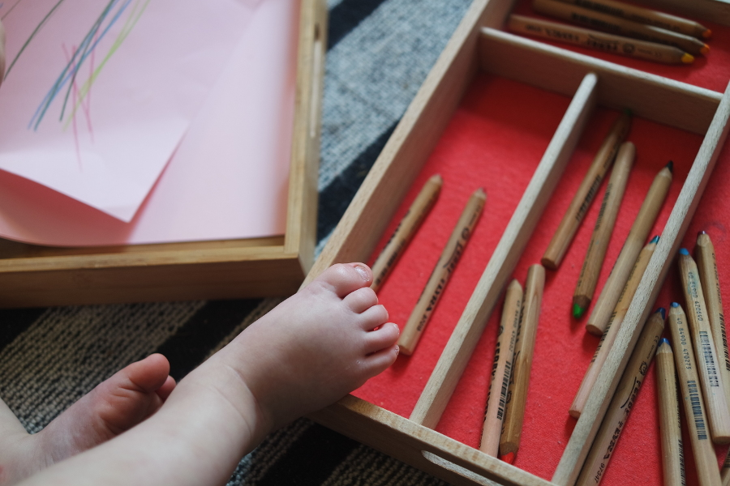
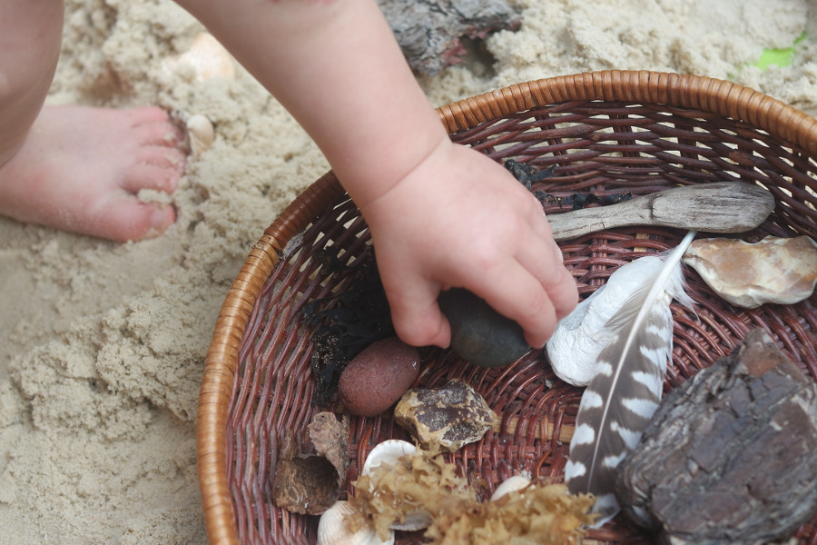
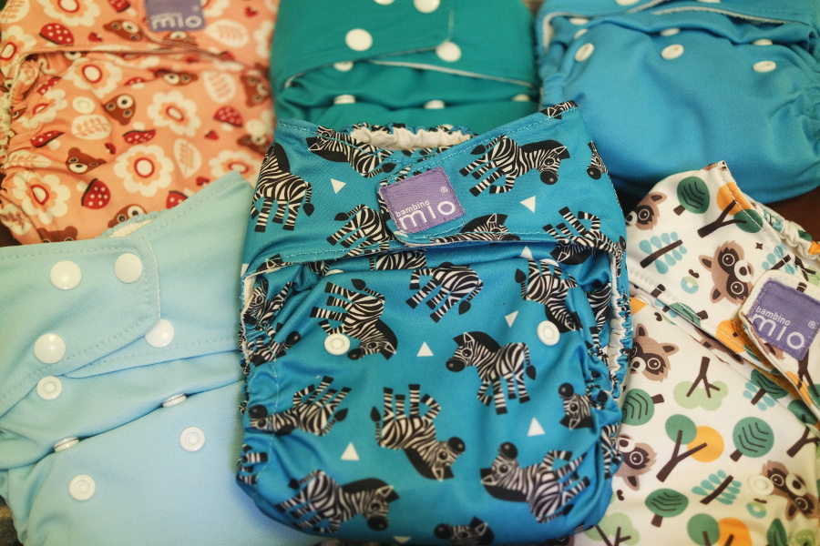

I am Sarah Cowperthwaite, an Ofsted registered childminder located in East Harnham, Salisbury.
I value each child as an individual, providing an enabling environment where they are given the opportunity to learn through play and at their own pace. I use gentle practices in my setting and treat each child with empathy, respect and understanding at all times.
My setting
My setting is well-equipped to provide your child with a home-from-home and a place to explore and challenge themselves.
With a main room, a secondary play/rest room and a purpose-built outdoor area, my home has plenty of space for young children to grow and play.
I offer a variety of different activities and open-ended play, all tailored to your child’s age, stage of development, individual needs and interests, and guided by the Early Years Foundation Stage framework.
Animals
Our family dog, Perry, is always on site and offers your older child the opportunity to learn more about animal responsibility if this is something you are interested in for them. He has his own play area and is otherwise kept separately from children at all times.
Outdoor learning
Whether it’s hunting for bugs in the Autumn or splashing in puddles in the Spring, we spend a lot of time outdoors, both in our outdoor children’s area and with frequent trips to local areas like Harnham Slope, Middle Street Meadow, and Churchill Gardens.
Working in partnership
Throughout your child’s time with me, I will work together with you to provide the best support for your child’s continued learning and development and will always be on hand to discuss any worries or concerns.
Each child in my care is given a learning journey book to record key observations and activities, and I encourage you to take this home as often as you wish and add to it any memories or achievements you like.
Opening times & services
I am open Monday to Thursday and my hours of care (7:00AM-7:00PM) are flexible.
I am experienced in areas like cloth nappy care, gentle parenting, baby wearing, paced feeding, baby-led weaning and traditional weaning. I recognise the importance of consistent care and am happy to discuss any and all areas of your child’s care.
Meals can be provided for an extra cost and are always home-made.
Location
My home is set away from New Harnham road, near Newbridge roundabout. Conveniently located for those looking for care near to Salisbury District Hospital, on the way to or from Downton, or travelling towards the city centre. It is a short walk away from St Osmund’s, Bishop Wordsworth’s and Harnham Infants School.
Please take a look through my Prices and Policies page and contact me if you wish to hear more.